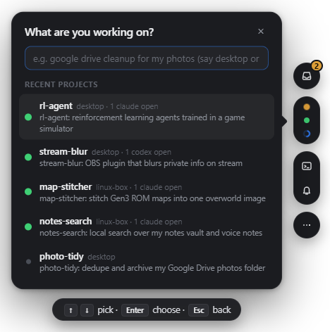
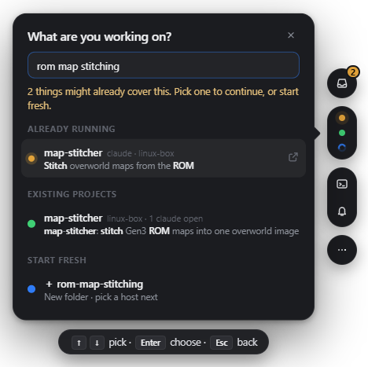
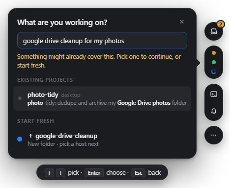
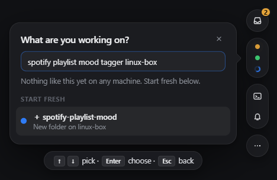
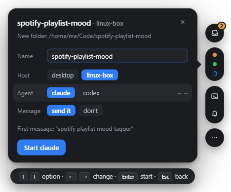
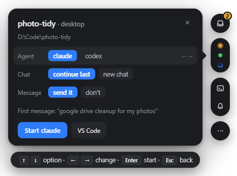
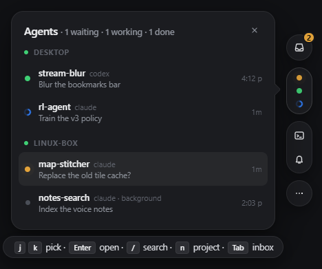

Open the panel and press n
Ctrl+Alt+Space opens openone from anywhere. n asks what you're working on.
Before you type, it lists recent projects across your machines, the ones with agents open first.

Tell openone what you want to work on. Before it makes anything new, it checks every machine for work that already covers it, so you don't find out later that you'd already started.
Ctrl+Alt+Space opens openone from anywhere. n asks what you're working on.
Before you type, it lists recent projects across your machines, the ones with agents open first.

As you type, it searches every machine for two kinds of existing work:
The yellow line tells you how many things might already cover it.

Folder names aren't enough: "google drive cleanup" should find photo-tidy. So openone reads the start of each project's README.md (or AGENTS.md, CLAUDE.md, package.json) on every machine and matches your words against it, and their meaning too: "cloud backup for pictures" finds it as well, tagged similar.
Picking an existing project continues it: same folder, last chat resumed, and what you typed sent as the next message.

If no machine has anything like it, it says so and offers a new folder with a short name taken from your words.
Mention a machine (“…mood tagger linux-box”) to pick where it goes. If you don't, it asks in the next step.

↑↓ move between options and ←→ change them:

openone opens a new window in the tmux session that machine's Windows Terminal tab is showing. It creates the folder if it's new, cds into it, starts the agent with your message, and switches the tab to it.
o (or the VS Code button) opens the folder in VS Code. Folders on another machine open over Remote-SSH, so you edit them as if they were local.


| Ctrl+Alt+Space | Open or close the panel, on the agent list with the most urgent agent selected |
| j k | Move up and down (arrows work too) |
| Enter | Jump to that agent's terminal |
| / | Search agents by name, machine, or words from their conversation |
| n | Start or continue a project (the flow above) |
| Tab | Switch to the inbox: agents waiting on you or just finished |
| r | Reply to an agent without leaving the panel |
| 1–9 | Answer an agent's question |
| o | Open the selected agent's folder in VS Code |
| Esc | Back, or close |
Claude sessions started with claude --bg (or by tools like trident) run outside tmux. They show up marked background; opening one runs claude attach in a window so you can answer it like any other.
This server's main page is the same panel. The ⋯ menu has Start or continue a project, with a Start button instead of Enter.
openone streams what each pane prints instead of re-reading screens, so your terminal never flashes. Each pane is read once when it first appears.
Each host in the config can say where its projects live, and how VS Code reaches it if that differs from its ssh address. Agent commands can be changed too.
{
"hosts": [
{ "name": "desktop", "type": "psmux", "workspace": "D:\\Code" },
{ "name": "linux-box", "type": "ssh", "ssh": "me@linux-box", "workspace": "~/Code", "vscode": "linux-box" }
],
"agents": {
"claude": { "start": "claude", "resume": "claude --continue" },
"codex": { "start": "codex", "resume": "codex resume --last" }
}
}